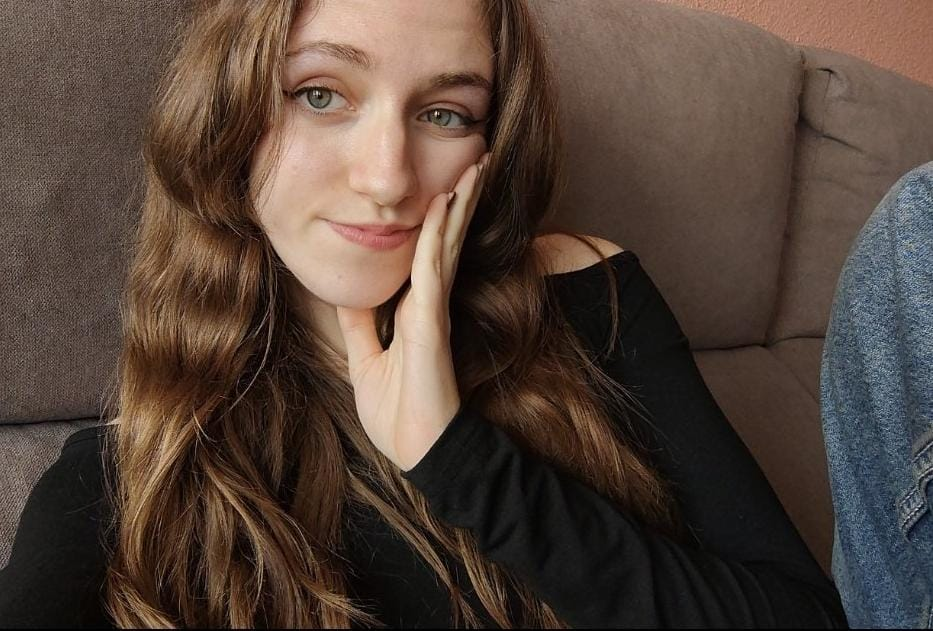

Sobre Nosotros
¡Hola! ¡Que bién verte aquí!
Somos Alex, Clara, Mireia y Nai, estudiantes del grado de periodismo en la Universidad Miguel Hernández de Elche. Con este blog queremos daros un espacio para encontrar las últimas noticias sobre conciertos de música de cine!
Nuestro Equipo
- Alex
¡Hola! Soy Alexandra Curalet, estudiante de periodismo y fanática de las bandas sonoras y musicales. Me encanta como a través de esta música se consigue transmitir tanto y tan bien. Con este blog, espero que podamos crear un espacio para compartir esa pasión que nos une: el amor por la música y el cine. - Clara
Soy Clara Blasberg y tengo 20 años. Estudio medios de comunicación en Bonn, Alemania. Actualmente estoy estudiando en la UMH de Elche el doble grado de comunicación audiovisual y periodismo como semestre de ERASMUS. Siempre me ha gustado la música: yo toco el chelo en la orquesta desde hace años, música clásica tal como música de películas. Poder ser parte de interpretar una banda sonora con una gran orquesta cada vez es una experiencia emotional y increíble.  Mireia
Mireia
Me llamo Mireia Navarro, tengo 20 años y estudio periodismo ya que mi gran vocación siempre ha sido escribir y contar historias de manera emotiva. Por ello, una de mis pasiones es la música en el cine, aquellas canciones que han dado el toque a muchas películas que nunca podré olvidar por ser tan increíbles y que generan un gran impacto en nuestras vidas.- Nai
¡Hola! Soy Naiara González, tengo 19 años y estudio periodismo en la UMH. Me considero una persona apasionada por el cine, por que me gusta disfrutar de su arte tanto visual como sonoro, de ahí que me encante hablar sobre bandas sonoras. Si te gustan los soundtracks tanto como a nosotras échale un vistazo a nuestro blog, que tiene un pedacito de nuestra pasión por la música en este medio :)